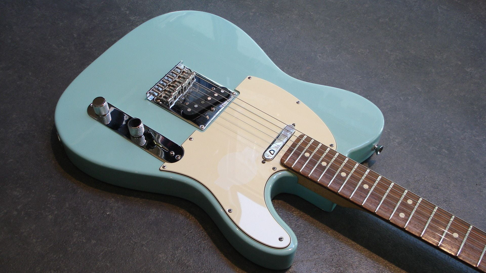
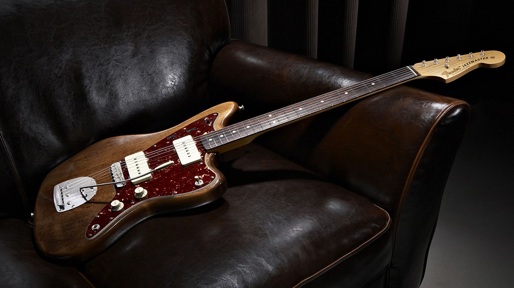

A Fender é uma icônica marca de guitarras fundada em 1946, por Leo Fender, um técnico eletrônico que consertava rádios, instrumentos e amplificadores. Leo desenvolveu modelos de guitarra e baixo que entraram pra história, principalmente com suas marcantes sonoridades e tocabilidades confortável.